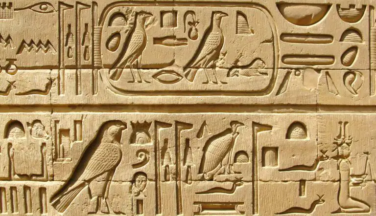
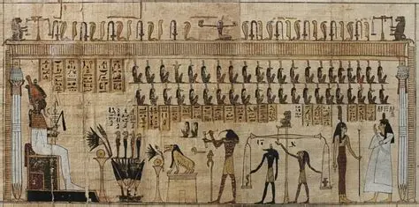
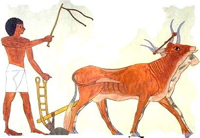
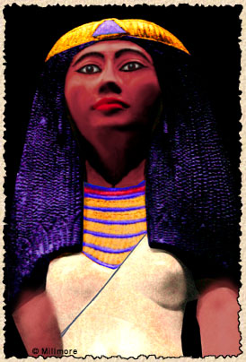

What is Ancient egypt about?
Ancient Egypt is renowned for its remarkable achievements in architecture, art, writing, and governance, as well as its rich cultural heritage and monumental structures like the pyramids and temples.
Who are the pharoahs?
| Pharoah | Discription | Date |
|---|---|---|
| Narmer (Mina) | First pharaoh of a unified Egypt United Upper and Lower Egypt Founded the First Dynasty | 3100 BCE |
| Khufu | Built the Great Pyramid of Giza One of the Seven Wonders of the Ancient World | 2589 BCE |
| Senusret III | Powerful military ruler Expanded Egypt into Nubia Improved administration and law | 1878 BCE |
| Akhenaten | Introduced monotheism (worship of Aten) Caused religious and political upheaval | 1353 BCE |
| Tutankhamun | Restored traditional religion Famous because his tomb was found intact (1922) | 1332 BCE |
| Ramses II (Ramses the Great) | Ruled for 66 years Built massive temples (Abu Simbel) Fought the Battle of Kadesh Most powerful and famous pharaoh | 1279 BCE |
| Cleopatra VII |
Last pharaoh of Egypt Allied with Julius Caesar and Mark Antony
Known for political intelligence, not beauty Her death ended ancient Egypt's independence |
51-30 BCE |
What did the Pharoahs invent?
| Image of Invention | Name of Invention | Discription |
|---|---|---|
|  | Writing | Along with the Mesopotamians, the Egyptians were the first people to develop their language into a codified form of writing. All early forms of writing were pictograms-pictures. All writing systems developed in this way but their original forms become lost as the pictures are refined into abstract forms. What is interesting about the Egyptians is that although their writing changed to the abstract form of Hieratic, they deliberately preserved the hieroglyphic pictures in their original forms. |
|  | Papaya Sheets | Papyrus sheets are the earliest paper-like material all other civilisations used stone, clay tablets, animal hide, wood materials or wax as a writing surface. Papyrus was, for over 3000 years, the most important writing material in the ancient world. It was exported all around the Mediterranean and was widely used in the Roman Empire and the Byzantine Empire. Its use continued in Europe until the seventh century AD, when an embargo on exporting it forced the Europeans to use parchment. |

|
Black Ink | The Egyptians mixed vegetable gum, soot and bee wax to make black ink. They replaced soot with other materials such as ochre to make various colours. |
|  | The Ox-drawn plough | Using the power of oxen to pull the plough revolutionised agriculture and modified versions of this Egyptian invention are still used by farmers in developing countries around the world. |

|
The Sickle | The sickle is a curved blade used for cutting and harvesting grain, such as wheat and barley. |

|
The Calendar | Before: The solar calendar was devised by the Egyptians through recording the yearly reappearance of Sirius (the Dog Star) in the eastern sky. It was a fixed point which coincided with the yearly flooding of the Nile. Their calendar had 365 days and 12 months, with 30 days in each month and an additional five festival days at the end of the year. However, they failed to account for the additional fraction of a day and their calendar slowly became incorrect. Ptolemy III added one day to the 365 days every four years. |
|  | Cosmetic Makeup | The Egyptian invented eye makeup as far back as 4000 B.C. They combined soot with a lead mineral called galena to create a black ointment known as kohl. They also made green eye makeup by combining malachite with galena to tint the ointment. Both men and women wore eye makeup did believe it could cure eye diseases and keep them from falling victim to the evil eye. |

|
Toothpaste | At the 2003 dental conference in Vienna, dentists sampled a replication of ancient Egyptian toothpaste. Its ingredients included powdered of ox hooves, ashes, burnt eggshells and pumice. Another toothpaste recipe and a how-to-brush guide was written on a papyrus from the fourth century AD describes how to mix precise amounts of rock salt, mint, dried iris flower and grains of pepper to form a “powder for white and perfect teeth.” |